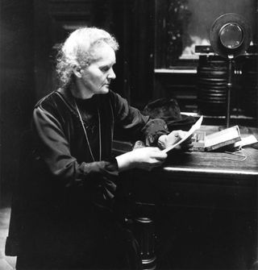

Life in Paris
Marie Curie grew up in poland, but ended up moving to Paris. Women were not allowed to go to university at poland, so she thought Paris would give her that opportunity. In Paris, she was a misfit and felt like a foreigner. This was due to the fact that she was surrounded by french speaking people.
In class, she was in fact respected by her classmates and got treated fairly well. Despite living in poverty, Marie had a strong desire to study science and worked very diligently. Her eating habits were also just as intense, living on butter and bread. Radishes was also a huge part of her diet.
